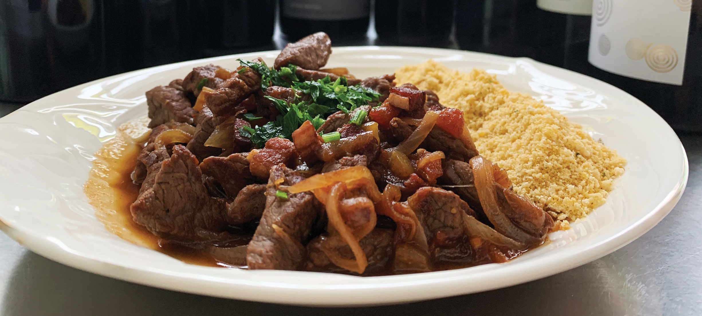
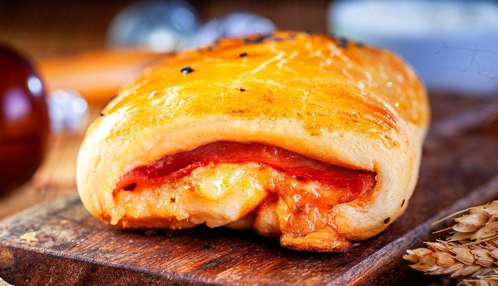

Comidas Típicas
Picadinho de Carne - O picadinho de carne é um prato relativamente simples de fazer, mas muito apreciado. O seu preparo conta com filé de carne cortado em cubos e servido no próprio caldo, lembrando o estrogonofe. Geralmente o acompanhamento é farofa de banana e arroz branco — e em alguns lugares ainda é acrescentado ovo frito.
Bauru - Esta comida paulista foi criada na cidade de Bauru, interior de São Paulo. Ele já faz parte do cardápio de lanchonetes e restaurantes de todo País — em diferentes versões, é claro — e pode ser encontrado Brasil afora. Tradicionalmente, é feito com pão francês, queijo muçarela derretido, rosbife, tomate seco, picles e orégano. Em alguns locais a carne é substituída por presunto.
Sonho - Apenas o nome já é bem sugestivo, não é mesmo? O sonho também é uma das típicas receitas de São Paulo e que se espalhou por todos os lugares. A iguaria é uma verdadeira febre nas padarias da capital paulista e trata-se de um delicioso pão redondo, recheado com muito açúcar e bastante cremoso. O doce tradicional conta com recheio de creme branco, mas existem ainda sonhos de paçoca, de brigadeiro e de limão, por exemplo.
Músicas Típicas
Trem das Onze - Adoniran Barbosa
Adoniran Barbosa é um dos artistas mais icônicos de São Paulo. Ele é um dos artistas que mais homenageou as terras paulistas em suas músicas. São 24 músicas sobre São Paulo, mas a que estaremos destacando é o Trem das Onze, música que imortalizou o bairro do Jaçanã, inclusive para pessoas que nunca pisaram no local.
Não existe amor em SP - Criolo
Falando sobre uma música mais recente, "Não existe amor em SP" já é considerada um hino. As opiniões sobre o título são das mais variadas, tendo muita gente que concorda e também muita gente que discorda. Embora não dê para afirmar se existe amor em SP, com essa obra podemos afirmar que, pelo menos, bom gosto musical exite.
Punk da Periferia - Gilberto Gil
Nessa incrível obra de Gilberto Gil, há dois pontos que fazem essa ser uma música muito importante para São Paulo. O primeiro é a citação do movimento musical que ocorreu em São Paulo como crítica a censura, o punk rock. O segundo ponto é a imortalização do bairro da Freguesia do Ó.